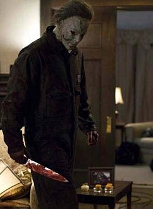

Хэллоуин
1978 (+семь сиквелов в трёх разных временных линиях, ремейк Роба Зомби и сиквел к нему)

Майк Майерс
Суть такова: небольшая группа прогрессивной американской молодежи планомерно выпиливается сбежавшим психом в маске Майком Майерсом. Сам фильм может считаться винрарным (в отличие от сиквелов), так как снимался Джоном «Наше всё» Карпентером, который копипастил «Психо» Хичкока и какое-то агентство ОБС даже обьявило его самым страшным ужастиком всех времен.
Порядок просмотра разных временных линий:
- Halloween (1978), Halloween II (1981), Halloween 4: The Return of Michael Myers (1988), Halloween 5: The Revenge of Michael Myers (1989), Halloween: The Curse of Michael Myers (1995).
- Halloween (1978), Halloween II (1981), Halloween H20: 20 Years Later (1998), Halloween: Resurrection (2002).
- Halloween (1978), Halloween (2018).
Фильм Halloween III: Season of the Witch (1982) никак не связан с остальными.
Значимость:
- В Пиндостане Майк обладает определенной меметичностью. Автору данной правки приходилось видеть его в Робоцыпе в компании с Фредди, Джейсоном, Пинхедом, Кожемордым из ТРБ и Призраком из «Крика» в пародии на американские реалити-шоу.
- Пидорастичная вики пидорастично сообщает, что при бюджете в 325 000 долларов фильм собрал 47 000 000 долларов только в США. Эпик вин. Именно он считается прародителем жанра слэшер в кино (то бишь без него не было бы и Пятницы и КнУВ). Также задал большинство штампов ужасам 80-х.